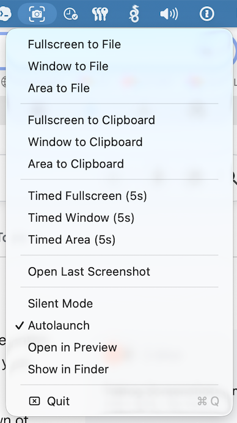

ScreenshotMenu lives quietly in your menu bar and turns macOS screen capture into one click. Grab the fullscreen, a window, or any area — straight to a file or your clipboard.

All the essentials of a great screenshot tool, packed into one tidy menu bar drop-down.
Capture the entire screen, a single window, or drag to select any region — just like native macOS, but faster to reach.
Save shots as PNG with a smart default name, or copy straight to the clipboard to paste into chats, docs and design tools.
A 5-second delay lets you open menus, tooltips and hover states before the shutter fires. Available for every capture mode.
Mute the camera shutter sound for distraction-free captures during meetings, recordings or late-night work.
Toggle launch-at-login so ScreenshotMenu is always ready in your menu bar — no Dock icon, no fuss.
Automatically reveal each new screenshot in Finder or open it in Preview — or reopen your last capture instantly.
Built on the native macOS capture engine, so your screenshots look exactly as expected.
The camera-viewfinder icon sits in your menu bar, always one click away.
Choose fullscreen, window or area — to a file, the clipboard, or with a timer.
Name your PNG, or paste from the clipboard anywhere. Optionally open it in Preview.
ScreenshotMenu is a free, lightweight macOS menu bar app for taking screenshots. It lets you capture the full screen, a single window, or a selected area, and save it to a file or copy it straight to the clipboard — all from a tidy drop-down menu.
Yes. ScreenshotMenu is completely free to download and use on macOS 13 (Ventura) or later, on both Apple Silicon and Intel Macs.
It uses the same native macOS capture engine, so quality is identical — but it puts every mode (file, clipboard, timed, fullscreen, window, area) one click away in your menu bar, with extras like silent mode, auto-launch and open-in-Preview.
Yes. Take 5-second timed captures to grab menus and hover states, and enable Silent Mode to mute the shutter sound.
No. ScreenshotMenu is a menu-bar-only app (no Dock icon) and uses almost no resources.
Download the signed & notarized DMG, drag it to Applications, and you're capturing in seconds.
Download .dmg